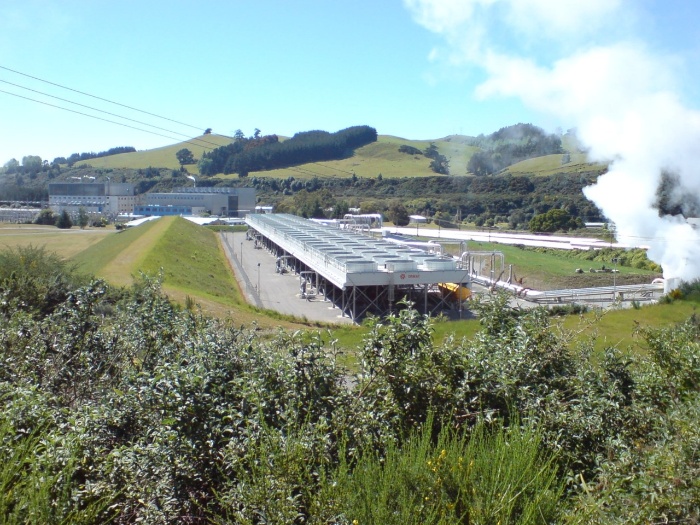

Proven geothermal, grid-adjacent AI campus
A preliminary 100 MW Phase 1 concept anchored by firm geothermal power. Candidate routes include Central North Island geothermal proximity and colder-climate Southland infrastructure paths, subject to site, power, fibre, consent, and partner diligence.1112
Download New Zealand summaryIllustrative: Wairakei geothermal infrastructure in the Taupo volcanic zone; not an Archegon site or partner asset.